미국 브랜드 680
미국에서 시작한 브랜드 680개를 로고와 함께 모았습니다. 수록 기준은 검수된 브랜드 설명이나 공식 웹사이트가 일치하는 위키데이터 개체에서 기원 국가가 확인된 경우로 한정했습니다.
다른 국가 보기
국가별 전체 →산업별로는 에너지·산업재 131개, 미디어·엔터테인먼트 116개, 금융 96개, 기술·전자 95개 순입니다. 설립연도가 확인된 브랜드는 647개이며 가장 오래된 곳은 1802년, 가장 최근은 2025년에 시작했습니다. 시기별로는 1900년 이전 74개, 1900~1949년 130개, 1950~1999년 326개, 2000년 이후 117개입니다. 수록 자료로는 로고 이미지 566개, 로고 변천 자료 28개, 연혁 타임라인 56개를 갖췄습니다. 이 가운데 599개는 공식 웹사이트가 일치하는 위키데이터 개체로 연결해 두었습니다.
미국 브랜드 목록
 제록스XEROX미국 · 1906년
제록스XEROX미국 · 1906년제록스(Xerox)는 1906년 미국에서 창립해 제로그래피 기반 복사기로 사무 문서 산업을 개척한 문서장비 기업이다.
시스코 시스템즈(Cisco Systems)는 라우터·스위치 등 네트워킹 장비와 사이버보안·협업 솔루션을 개발하는 미국의 IT 기업이다.
 말보로Marlboro미국 · 1924년
말보로Marlboro미국 · 1924년말보로(Marlboro)는 필립 모리스가 1924년 도입한 미국의 담배 브랜드이다.
 어그UGG미국 · 1978년
어그UGG미국 · 1978년UGG(어그)는 미국 데커스 브랜즈 산하의 양가죽 부츠로 유명한 신발 브랜드이다.
 뉴발란스New Balance미국 · 1906년
뉴발란스New Balance미국 · 1906년뉴발란스(New Balance)는 미국 보스턴에 기반을 둔 비상장 운동화·스포츠 의류 기업이다.
 페덱스FedEx미국 · 1971년
페덱스FedEx미국 · 1971년페덱스(FedEx)는 미국 멤피스에 본사를 둔 글로벌 특송·물류 기업이다.
 오픈AIOpenAI미국 · 2015년
오픈AIOpenAI미국 · 2015년OpenAI는 미국의 인공지능 연구·개발 기업으로, 대화형 AI 서비스 ChatGPT를 비롯한 생성형 AI 제품으로 널리 알려져 있다.
버드와이저(Budweiser)는 아돌푸스 부시가 1876년 출시한 미국의 아메리칸 라거 맥주 브랜드이다.
 어도비Adobe미국 · 1982년
어도비Adobe미국 · 1982년어도비(Adobe)는 1982년 설립된 미국의 소프트웨어 기업으로, 포토샵(Photoshop)을 비롯한 크리에이티브 제작 도구와 구독형…
 써브웨이Subway미국 · 1965년
써브웨이Subway미국 · 1965년써브웨이(Subway)는 1965년 미국에서 시작된 서브마린 샌드위치 프랜차이즈이다.
 던킨Dunkin'미국 · 1950년
던킨Dunkin'미국 · 1950년던킨(Dunkin')은 1950년 미국 매사추세츠주 퀀시에서 문을 연 커피·도넛 체인으로, 창업자 윌리엄 로젠버그가 1948년 시작한 '오픈…
 토리 버치Tory Burch미국 · 2004년
토리 버치Tory Burch미국 · 2004년토리 버치(Tory Burch)는 2004년 디자이너 토리 버치가 설립한 미국 패션 브랜드이다.
 팬아메리칸 월드 항공Pan Am미국 · 1927년
팬아메리칸 월드 항공Pan Am미국 · 1927년팬암(Pan American World Airways)은 1927년부터 1991년까지 운항한 미국의 항공사로, 한때 미국의 비공식 국적기로…
노스페이스(The North Face)는 1966년 미국에서 창립한 VF 코퍼레이션 산하의 아웃도어 의류·장비 브랜드이다.
 에스티 로더ESTÉE LAUDER미국 · 1946년
에스티 로더ESTÉE LAUDER미국 · 1946년에스티 로더(Estée Lauder)는 1946년 미국에서 창립된 프레스티지 화장품 브랜드이자 글로벌 뷰티 그룹이다.
 도미노피자Domino's Pizza미국 · 1960년
도미노피자Domino's Pizza미국 · 1960년도미노피자(Domino's Pizza)는 1960년 미국에서 시작된 글로벌 피자 배달·테이크아웃 프랜차이즈이다.
 양키캔들Yankee Candle미국 · 1969년
양키캔들Yankee Candle미국 · 1969년양키캔들(Yankee Candle)은 1969년 미국에서 시작된 향초 제조·소매 브랜드이다.
 켈로그KELLOGG’s미국 · 1906년
켈로그KELLOGG’s미국 · 1906년켈로그(Kellogg's)는 윌 키스 켈로그가 1906년 설립한 미국의 아침식사 시리얼 브랜드이다.
바세린(Vaseline)은 페트롤리움 젤리를 기반으로 한 미국의 스킨케어 브랜드이다.
 피자헛Pizza Hut미국 · 1958년
피자헛Pizza Hut미국 · 1958년피자헛(Pizza Hut)은 1958년 미국 캔자스에서 창립된 세계 최대 규모의 피자 프랜차이즈 브랜드이다.
 하인즈Heinz미국 · 1869년
하인즈Heinz미국 · 1869년하인즈(Heinz)는 1869년 헨리 J.
 이스턴 항공Eastern Airlines미국
이스턴 항공Eastern Airlines미국이스턴 항공(Eastern Air Lines)은 1991년까지 운항한 미국의 항공사다.
인텔은 보이지 않는 부품을 소비자가 인식하는 브랜드로 만든 대표적 사례다.
 헌팅턴 뱅크Huntington Bank미국 · 1866년
헌팅턴 뱅크Huntington Bank미국 · 1866년헌팅턴 뱅크(The Huntington National Bank)는 미국 오하이오주 컬럼버스에 본사를 둔 지역 은행으로, 1866년 설립되어…
 그라자Graza미국 · 2022년
그라자Graza미국 · 2022년그라자(Graza)는 미국의 D2C 올리브오일 브랜드로, 2022년 1월 출시 이후 밝은 녹색의 짜는 스퀴즈 보틀과 단일산지 스페인…
 트립어드바이저Tripadvisor미국 · 2000년
트립어드바이저Tripadvisor미국 · 2000년트립어드바이저(Tripadvisor)는 전 세계 여행자가 직접 남긴 후기를 모아 숙소·음식점·관광지·체험을 비교하고 예약하도록 돕는 미국의…
 피어스페이스Peerspace미국
피어스페이스Peerspace미국피어스페이스는 미국에서 출발한 시간 단위 공간 대여 마켓플레이스로, 이벤트·회의·촬영·파티 등 목적에 맞는 독특한 공간을 시간당 단위로 예약할…
 랄프 로렌Ralph Lauren미국 · 1967년
랄프 로렌Ralph Lauren미국 · 1967년랄프 로렌(Ralph Lauren)은 1967년 미국에서 설립된 럭셔리 라이프스타일·패션 브랜드이다.
 더 하트퍼드The Hartford미국 · 1810년
더 하트퍼드The Hartford미국 · 1810년더 하트퍼드는 1810년 미국 코네티컷주 하트퍼드에서 설립된 미국의 대표적 보험·금융 기업이다.
 비자Visa미국 · 1958년
비자Visa미국 · 1958년비자는 전 세계 카드 결제를 중계하는 미국의 결제 네트워크 기업이다.
 웨스팅하우스 일렉트릭Westinghouse미국 · 1886년
웨스팅하우스 일렉트릭Westinghouse미국 · 1886년웨스팅하우스 일렉트릭은 1886년 조지 웨스팅하우스가 설립한 미국의 전기·산업 제조 기업으로, 본사는 펜실베이니아주 피츠버그에 두었다.
 코인베이스Coinbase미국 · 2012년
코인베이스Coinbase미국 · 2012년코인베이스(Coinbase)는 2012년 미국 샌프란시스코에서 설립된 암호화폐 거래 플랫폼으로, 비트코인을 비롯한 디지털 자산을 일반 사용자가…
 페이팔Paypal미국 · 1998년
페이팔Paypal미국 · 1998년페이팔은 1998년 미국에서 출발해 온라인 송금과 결제를 대중화한 핀테크 기업으로, 이베이 거래의 표준 결제 수단으로 성장한 뒤 독립 상장해…
 오리진스ORIGINS미국 · 1990년
오리진스ORIGINS미국 · 1990년오리진스(Origins)는 에스티로더가 1990년 출범시킨 미국의 자연주의 스킨케어 브랜드이다.
 이탈리Eataly미국 · 2004년
이탈리Eataly미국 · 2004년이탈리(Eataly)는 이탈리아 고품질 식재료의 판매·취식·학습을 한 지붕 아래 결합한 이탈리아식 식료품 마켓이다.
 카벨라스Cabela's미국 · 1961년
카벨라스Cabela's미국 · 1961년카벨라스(Cabela's)는 사냥·낚시·캠핑 등 아웃도어 레크리에이션 용품을 판매하는 미국 소매업체이다.
 블랭크 스트리트 커피Blank Street Coffee미국 · 2020년
블랭크 스트리트 커피Blank Street Coffee미국 · 2020년블랭크 스트리트 커피는 2020년 미국 뉴욕 브루클린에서 출발한 소형 점포 중심의 테크 기반 커피 체인이다.
 일렉트로닉 아츠Electronic Arts미국 · 1982년
일렉트로닉 아츠Electronic Arts미국 · 1982년일렉트로닉 아츠(EA)는 1982년 설립된 미국의 비디오 게임 기업으로, 캘리포니아 레드우드시티에 본사를 둔다.
 스테이플스Staples미국 · 1986년
스테이플스Staples미국 · 1986년스테이플스(Staples)는 미국에 본사를 둔 사무용품 전문 소매 기업이다.
 세븐업7up미국
세븐업7up미국세븐업은 미국에서 탄생한 레몬라임 향 무카페인 탄산음료로, 맑고 투명한 액체와 청량한 산미가 특징이다.
 퍼플렉시티 AIPerplexity미국
퍼플렉시티 AIPerplexity미국퍼플렉시티 AI는 미국 샌프란시스코에 본사를 둔 AI 기반 대화형 검색 서비스로, 질문에 직접 답하면서 그 근거가 된 출처를 함께 인용하는…
 바비브라운BOBBI BROWN미국 · 1991년
바비브라운BOBBI BROWN미국 · 1991년바비브라운(Bobbi Brown)은 자연스러운 아름다움을 강조하는 미국의 메이크업 브랜드이다.
 베네피트benefit미국 · 1976년
베네피트benefit미국 · 1976년베네핏 코스메틱스(Benefit Cosmetics)는 1976년 쌍둥이 자매 진·제인 포드가 미국 샌프란시스코에서 창업한 화장품 브랜드로,…
 베드 베스 앤드 비욘드Bed Bath & Beyond미국 · 1997년
베드 베스 앤드 비욘드Bed Bath & Beyond미국 · 1997년베드 배스 앤드 비욘드(Bed Bath & Beyond)는 침구·욕실·주방 등 가정용품을 판매했던 미국의 홈굿즈 소매 체인이다.
 프레임워크Framework미국 · 2019년
프레임워크Framework미국 · 2019년프레임워크는 2019년 미국에서 설립된 모듈형 노트북 제조 기업으로, 사용자가 직접 부품을 교체하고 업그레이드할 수 있는 수리 가능한 컴퓨터를…
 투미TUMI미국 · 1975년
투미TUMI미국 · 1975년투미(TUMI)는 1975년 찰리 클리퍼드가 미국에서 설립한 프리미엄 여행가방·비즈니스 백 브랜드다.
 코스트코Costco미국 · 1983년
코스트코Costco미국 · 1983년코스트코(Costco)는 연회비 회원제로 운영되는 미국의 다국적 창고형 대형 할인 유통업체이다.
 타파웨어Tupperware미국 · 1946년
타파웨어Tupperware미국 · 1946년터퍼웨어(Tupperware)는 발명가 얼 터퍼가 폴리에틸렌 밀폐용기를 개발해 1946년 선보인 미국의 가정용 식품 보관용기 브랜드다.
전체 목록
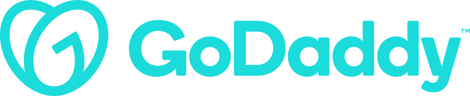
고대디 GoDaddy고대디(GoDaddy)는 인터넷 도메인 레지스트리, 도메인 등록대행, 웹 호스팅을 운영하는 미국의 상장 기업이다.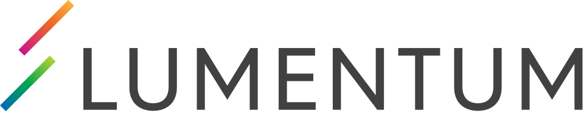
루멘텀 Lumentum루멘텀(Lumentum)은 광학 및 포토닉 제품을 제조하는 미국 기업이다.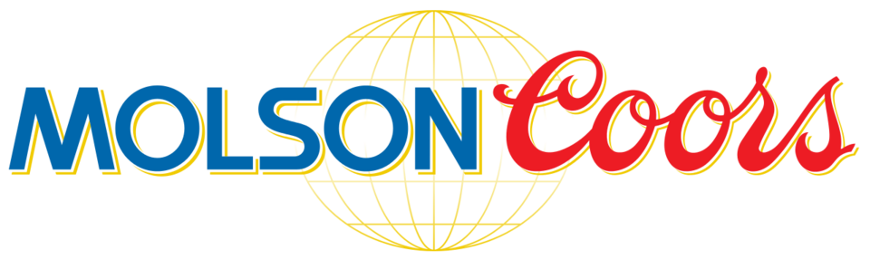
몰슨 쿠어스 Molson Coors Brewing Company몰슨 쿠어스(Molson Coors Brewing Company)는 미국과 캐나다에 기반을 둔 다국적 음료·양조 회사로, 맥주 생산량 기준 세계 5위 양조사이다.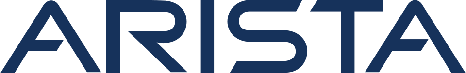
아리스타 네트웍스 Arista Networks아리스타 네트웍스(Arista Networks)는 대형 데이터센터와 AI, 캠퍼스, 라우팅 환경을 대상으로 클라이언트에서 클라우드까지의 네트워킹 서비스를…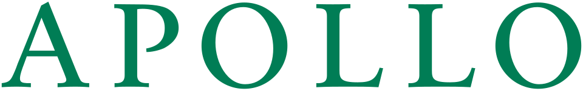
아폴로 글로벌 매니지먼트 Apollo Global Management아폴로 글로벌 매니지먼트(Apollo Global Management)는 신용·사모펀드·실물자산을 중심으로 대체자산에 투자하며 기관과 개인의 자금을 운용하는…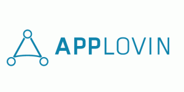
앱러빈 AppLovin앱러빈(AppLovin)은 개발자의 모바일 앱 마케팅·수익화·분석·배포를 지원하는 광고 및 소프트웨어 플랫폼을 운영하는 미국 모바일 기술 회사이다.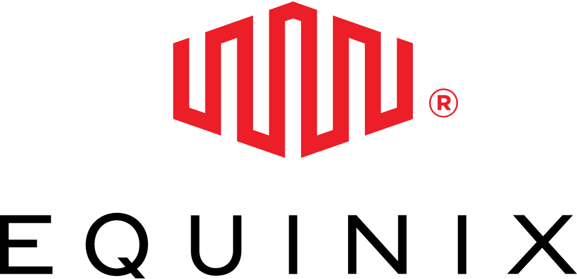
에퀴닉스 Equinix에퀴닉스(Equinix)는 미국 레드우드시티에 본사를 두고 인터넷 연결과 데이터센터 코로케이션을 운영하는 다국적 디지털 인프라 회사이다.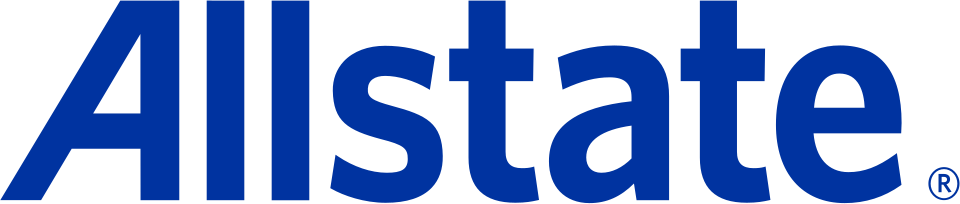
올스테이트 Allstate올스테이트(Allstate)는 미국에 기반을 두고 자동차보험을 비롯한 개인 대상 보험을 제공하며 캐나다에서도 개인보험 사업을 운영하는 보험회사이다.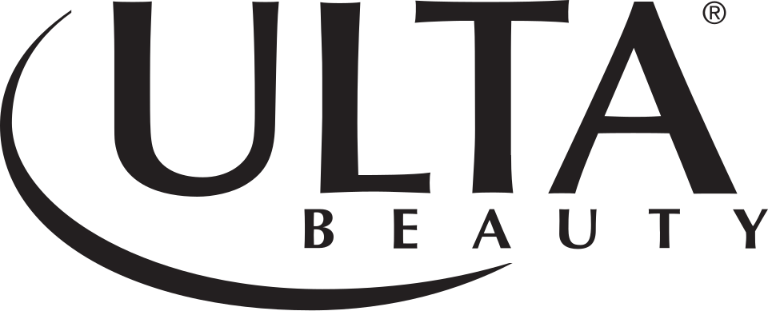
울타 뷰티 Ulta Beauty울타 뷰티(Ulta Beauty)는 미국 Bolingbrook에 본사를 둔 화장품 전문점 체인이다.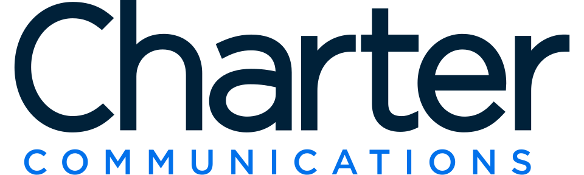
차터 커뮤니케이션스 Spectrum차터 커뮤니케이션스(Spectrum)는 미국의 통신·대중매체 회사가 운영하는 서비스 브랜드이다.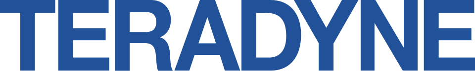
테라다인 Teradyne테라다인(Teradyne)은 미국의 자동 테스트 장비를 설계·제조하는 기업이다.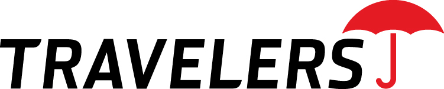
트래블러스 The Travelers Companies트래블러스(The Travelers Companies)는 미국의 다국적 보험회사이다.트릭스 레코드 Trix Records트릭스 레코드(Trix Records)는 1972년 피트 라우리가 미국에서 설립한 전통 블루스 레이블이다.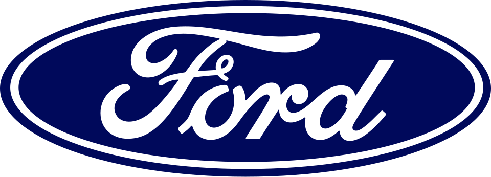
포드 자동차 회사 Ford Motor Company포드 자동차 회사(Ford Motor Company)는 미국 디어본에 본사를 둔 다국적 자동차 제조사이다.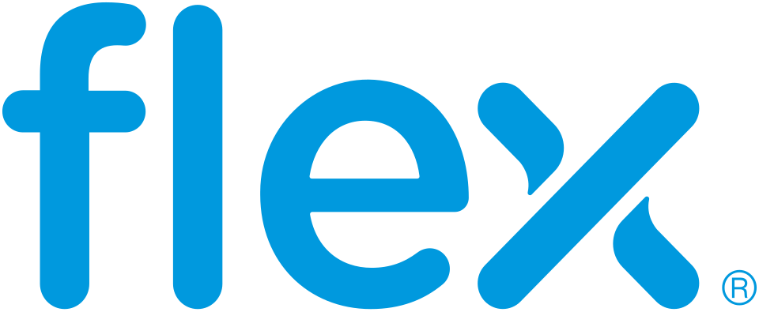
플렉스 Flex Ltd.플렉스(Flex Ltd.)는 싱가포르에 법적 소재지를 둔 다국적 제조 회사로, 전자 제조 서비스와 자체 설계 제조를 수행한다.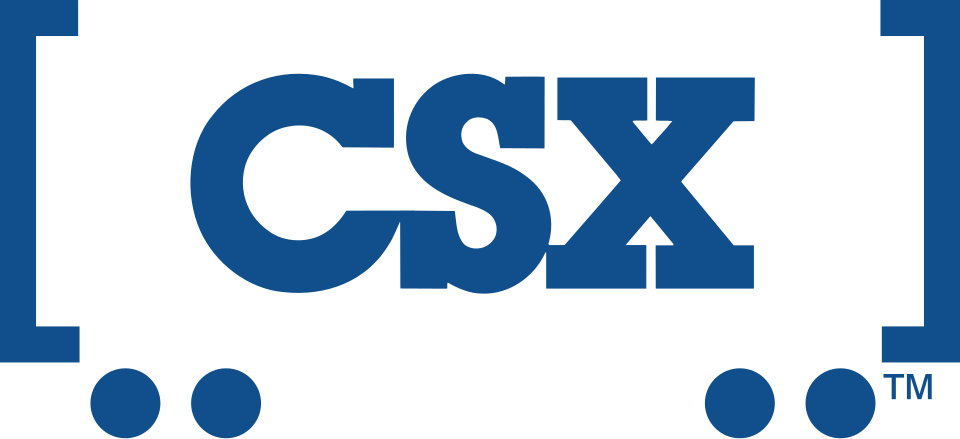
CSX 코퍼레이션 CSX CorporationCSX 코퍼레이션(CSX Corporation)은 북미의 철도 운송과 부동산을 중심으로 여러 사업을 운영하는 미국 지주회사이다.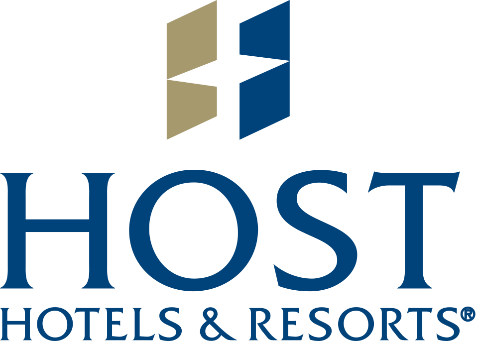
Host Hotels & ResortsHost Hotels & Resorts는 호텔에 투자하는 미국의 부동산투자신탁이다.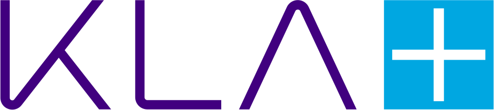
KLA CorporationKLA(KLA Corporation)는 반도체 제조 공정의 미세한 결함을 발견하는 웨이퍼 제조 장비를 제작하는 미국 반도체 기업이다.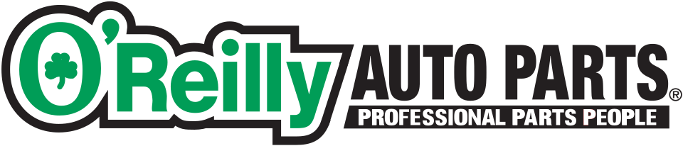
O'Reilly Auto PartsO'Reilly Auto Parts는 전문 정비 사업자와 직접 정비하는 고객에게 자동차 부품, 공구, 소모품, 장비와 액세서리를 판매하는 미국 자동차 부품 소매…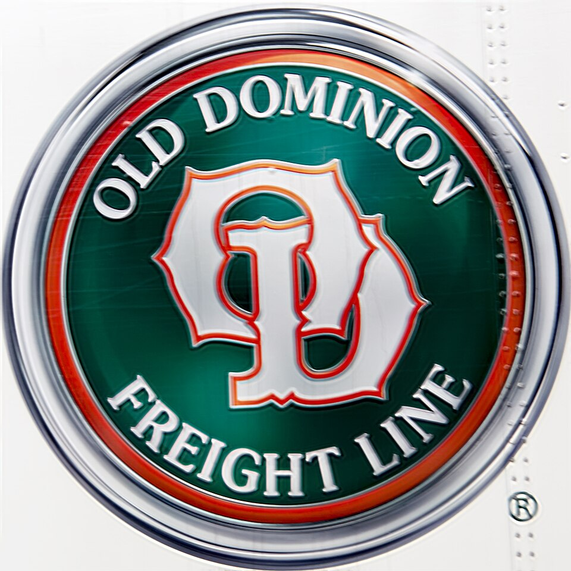
Old Dominion Freight LineOld Dominion Freight Line은 미국의 지역·권역 간·전국 단위 소량화물 운송 회사이다.ONEOKONEOK은 털사에 본사를 둔 미국의 석유·가스 중류 사업자로, 관련 산업에 집하·처리·분류·운송·저장 서비스를 제공한다.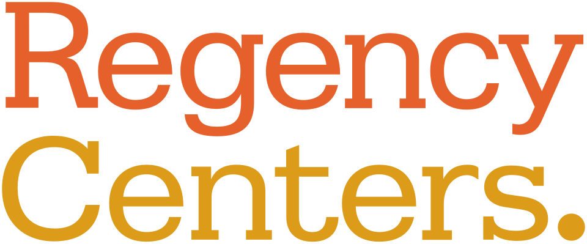
Regency CentersRegency Centers는 미국에서 식료품점을 핵심 임차인으로 둔 쇼핑센터를 소유하고 운영하는 부동산투자신탁이다.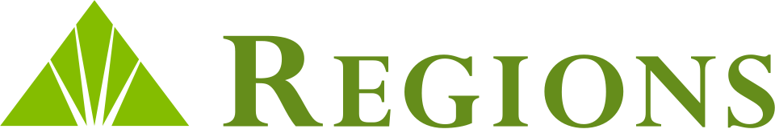
Regions Financial CorporationRegions Financial Corporation은 미국 남부와 중서부를 중심으로 은행·신탁·증권중개·주택담보대출 서비스를 제공하는 은행지주회사이다.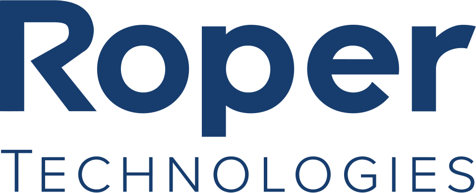
Roper TechnologiesRoper Technologies는 미국 새러소타에 본사를 두고 기술 부문의 여러 회사를 소유하는 지주회사이다.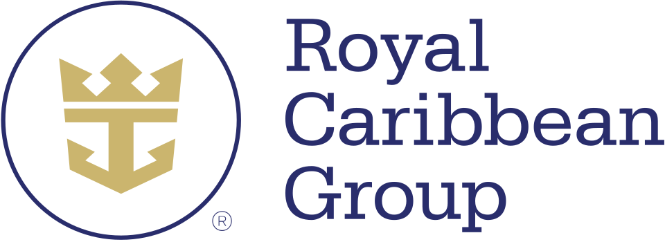
Royal Caribbean GroupRoyal Caribbean Group은 미국 마이애미에 본사를 두고 라이베리아에 법인 등록된 크루즈 지주회사이다.RTX 코퍼레이션 RTXRTX 코퍼레이션(RTX)은 미국의 다국적 항공우주 및 방위 복합기업으로, 항공우주 제조와 방위 사업 및 정보 서비스를 함께 수행한다.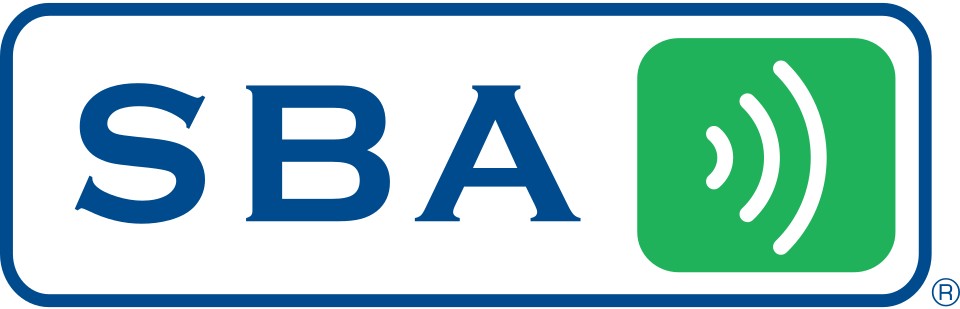
SBA CommunicationsSBA Communications는 미국, 캐나다, 중앙아메리카, 남아메리카, 남아프리카공화국에서 무선 인프라를 소유하고 운영하는 부동산투자신탁이다.SempraSempra는 샌디에고에 본사를 두고 전력과 천연가스 인프라에 집중하는 북미 공공 유틸리티 지주회사이다.Simon Property GroupSimon Property Group은 쇼핑몰, 아울렛 센터, 커뮤니티·라이프스타일 센터에 투자하는 미국 부동산투자신탁이다.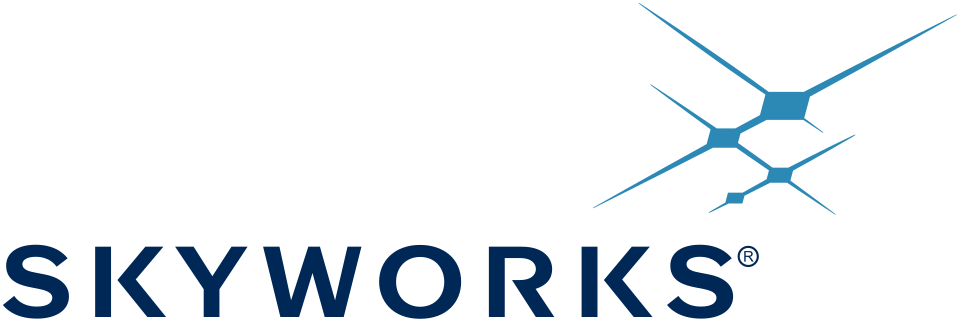
Skyworks SolutionsSkyworks Solutions는 저잡음 증폭기, 전력 증폭기, RF 스위치와 전력 관리 칩 등을 공급하는 미국 반도체 기업이다.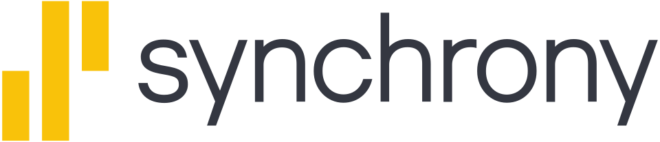
Synchrony FinancialSynchrony Financial은 신용, 판촉 금융, 로열티 프로그램, 할부 대출을 제공하는 미국 소비자 금융 서비스 회사이다.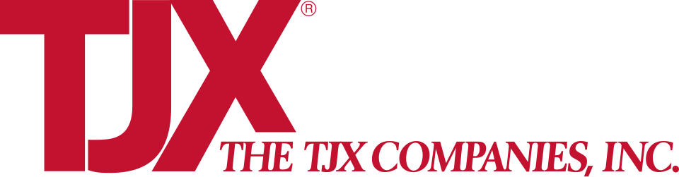
TJX CompaniesTJX Companies는 미국 프레이밍햄에 본사를 둔 다국적 오프프라이스 백화점 기업이다.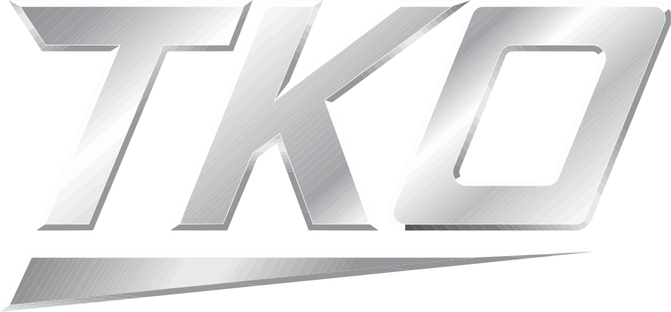
TKO Group HoldingsTKO Group Holdings는 미국 뉴욕에 본사를 둔 스포츠·엔터테인먼트 기업이다.Tractor Supply CompanyTractor Supply Company는 미국에서 주택 개량, 농업, 정원 관리, 가축, 말과 반려동물 관리용 장비 및 용품을 판매하는 체인점이다.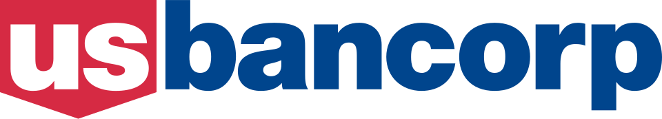
U.S. BancorpU.S. Bancorp는 미니애폴리스에 본사를 두고 델라웨어에 법인을 둔 미국의 다국적 은행 기관이다.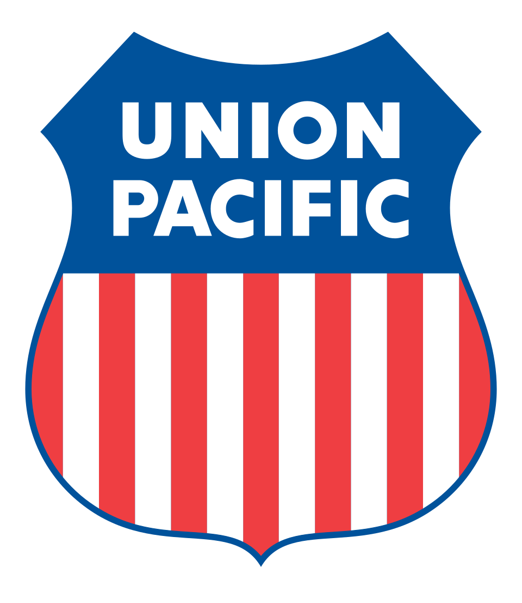
Union Pacific CorporationUnion Pacific Corporation은 Union Pacific Railroad의 지주회사 역할을 하는 미국 상장 철도 지주회사이다.